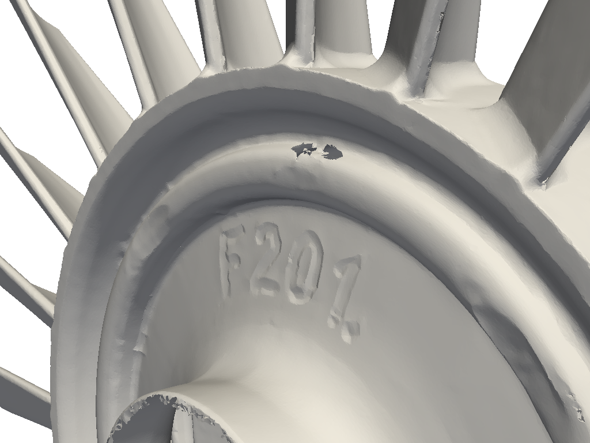
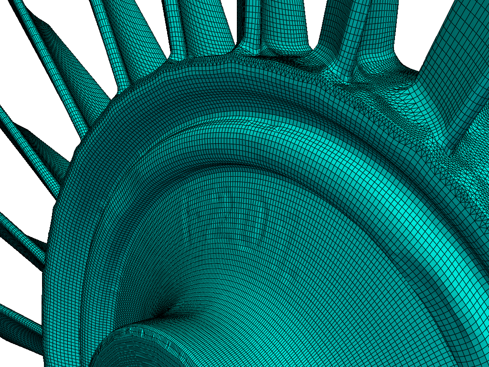
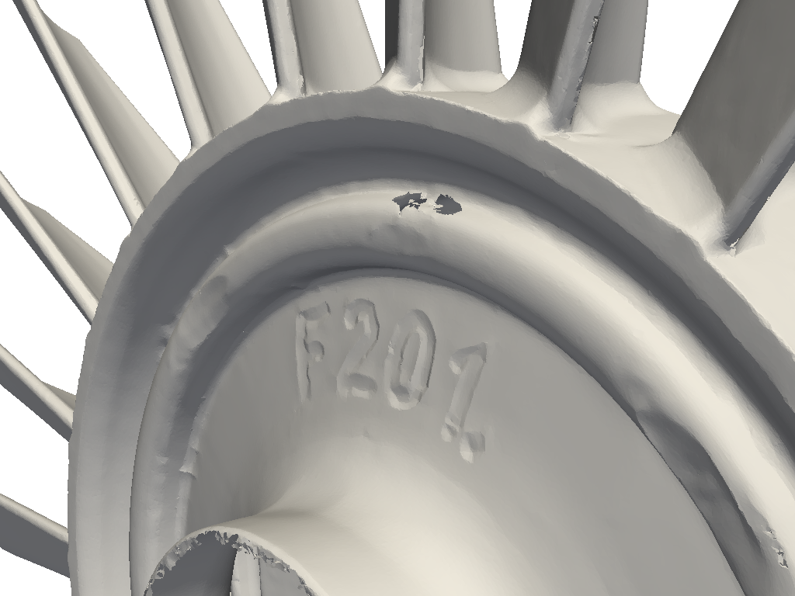
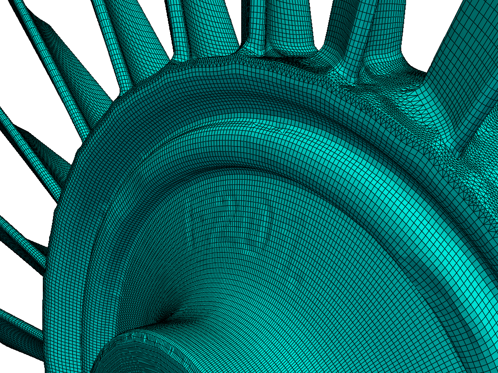

Create Models of damaged and out of specification parts in minutes, not days
Using FEMORPH, MRB engineers can rapidly generate high-fidelity models of parts that are damaged, worn, or otherwise out of specification. This allows for faster inspection, analysis, and corrective actions.
MRB Workflow

1. Scan Damaged Part
Acquire high-resolution 3D scans of the part to capture all defects and deviations.

2. Process Scan Data
Clean, align, and prepare the scanned data for digital twin creation.

3. Generate Computational Model
Create a simulation-ready model that accurately represents the damaged geometry.

4. Analyze & Validate
Run simulations or analyses to assess performance, identify issues, and recommend corrections.
Example Parts & Models

 


